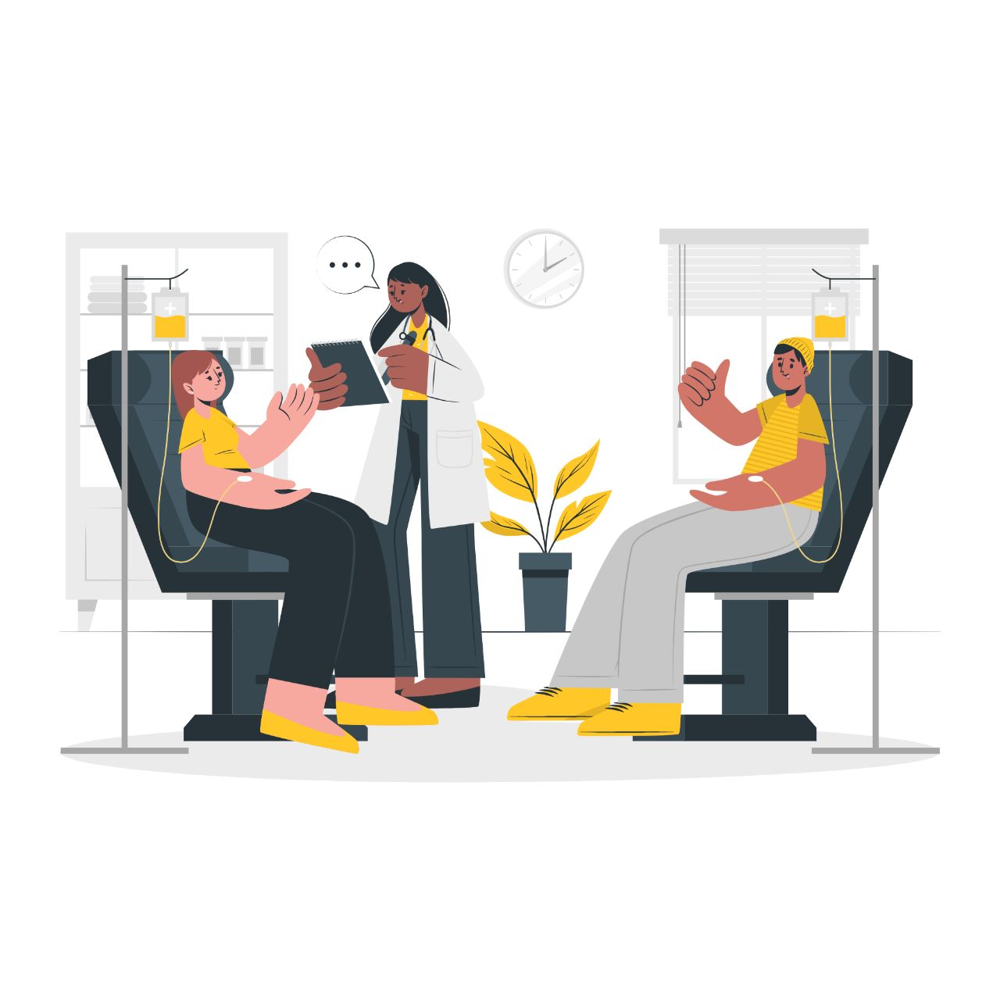

LUNDEV
Tinh ru anh di chay pho, chua kip chay pho thi anhchay mat tieu
• Every year our nation requires about 5 Crore units of blood, out of which only a meager 2.5 Crore units of blood are available.
• The gift of blood is the gift of life. There is no substitute for human blood.
• Every two seconds someone needs blood.
• More than 38,000 blood donations are needed every day.
• A total of 30 million blood components are transfused each year.
• The average red blood cell transfusion is approximately 3 pints.
• The blood type most often requested by hospitals is Type O.
• Sickle cell patients can require frequent blood transfusions throughout their lives.
• More than 1 million new people are diagnosed with cancer each year. Many of them will need blood, sometimes daily, during their chemotherapy treatment.
• A single car accident victim can require as many as 100 units of blood.
• Blood cannot be manufactured – it can only come from generous donors.
• Type O-negative blood (red cells) can be transfused to patients of all blood types. It is always in great demand and often in short supply.
• Type AB-positive plasma can be transfused to patients of all other blood types. AB plasma is also usually in short supply.

• Donating blood is a safe process. A sterile needle is used only once for each donor and then discarded.
• Blood donation is a simple four-step process: registration, medical history and mini-physical, donation and refreshments.
• Every blood donor is given a mini-physical, checking the donor's temperature, blood pressure, pulse and hemoglobin to ensure it is safe for the donor to give blood.
• The actual blood donation typically takes less than 10-12 minutes. The entire process, from the time you arrive to the time you leave, takes about an hour and 15 min.
• The average adult has about 10 units of blood in his body. Roughly 1 unit is given during a donation.
• A healthy donor may donate red blood cells every 56 days, or double red cells every 112 days.
• A healthy donor may donate platelets as few as 7 days apart, but a maximum of 24 times a year.
• All donated blood is tested for HIV, hepatitis B and C, syphilis and other infectious diseases before it can be transfused to patients.
• Blood makes up about 7 percent of your body's weight.
• There are four types of transfusable products that can be derived from blood: red cells, platelets, plasma and cryoprecipitate. Typically, two or three of these are produced from a unit of donated whole blood – hence each donation can help save up to three lives.
• Donors can give either whole blood or specific blood components only. The process of donating specific blood components – red cells, plasma or platelets – is called apheresis.
• One transfusion dose of platelets can be obtained through one apheresis donation of platelets or by combining the platelets derived from five whole blood donations.
• Donated platelets must be used within five days of collection.
• Healthy bone marrow makes a constant supply of red cells, plasma and platelets. The body will replenish the elements given during a blood donation – some in a matter of hours and others in a matter of weeks.
• you are between age group of 18-60 years.
• your weight is 45 kgs or more.
• your haemoglobin is 12.5 gm% minimum.
• your last blood donation was 3 months earlier.
• you are healthy and have not suffered from malaria, typhoid or other transmissible disease in the recent past.
There are many, many people who meet these parameters of health and fitness!
Do abide by our rules - be truthful about your health status!
We ensure the health of blood, before we take it, as well as after it is collected. Firstly, the donor is expected to be honest about his or her health history and current condition. Secondly, collected blood is tested for venereal diseases, hepatitis B & C and AIDS.
You have to be healthy to give 'safe blood'
• The number one reason donors say they give blood is because they "want to help others."
• Two most common reasons cited by people who don't give blood are: "Never thought about it" and "I don't like needles."
• One donation can help save the lives of up to three people.
• If you began donating blood at age 18 and donated every 90 days until you reached 60, you would have donated 30 gallons of blood, potentially helping save more than 500 lives!
• Only 7 percent of people in India have O-negative blood type. O-negative blood type donors are universal donors as their blood can be given to people of all blood types.
• Type O-negative blood is needed in emergencies before the patient's blood type is known and with newborns who need blood.
• Thirty-five percent of people have Type O (positive or negative) blood.
• 0.4 percent of people have AB-blood type. AB-type blood donors are universal donors of plasma, which is often used in emergencies, for newborns and for patients requiring massive transfusions.
bsbgh sbnjfbds fbnsihf ijbhfijshbf bnfijs